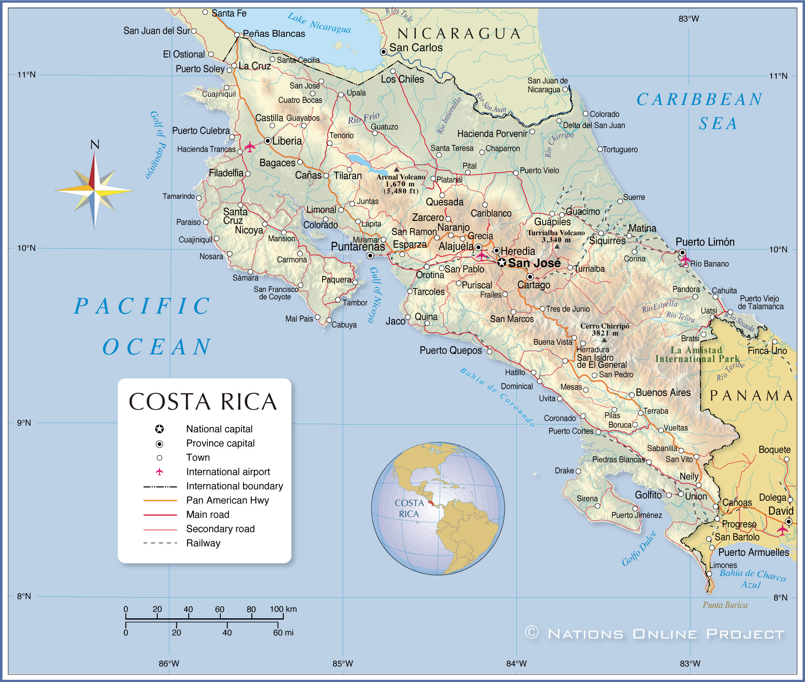

Welcome to Costa Rica!: If you’ve ever dreamed of a place where lush rainforests meet golden beaches, where adventure and relaxation blend seamlessly, and where the people are as warm as the tropical sun—welcome to Costa Rica! This website is your gateway to discovering why Costa Rica is one of the most breathtaking destinations in the world. Whether you’re looking for adrenaline-pumping activities like zip-lining over cloud forests and surfing on world-class waves, or simply want to unwind in a luxury eco-lodge surrounded by nature, this country has it all. Costa Rica isn’t just about beautiful landscapes—it’s about a way of life. With a strong commitment to sustainability, a rich cultural heritage, and a “Pura Vida” mindset that embraces happiness and well-being, it’s no surprise that Costa Rica is often ranked as one of the happiest places on Earth. From the vibrant capital of San José to the stunning Pacific and Caribbean coastlines, every corner of this paradise has something to offer. Explore our site to see why Costa Rica should be your next travel destination, and start planning the adventure of a lifetime!
